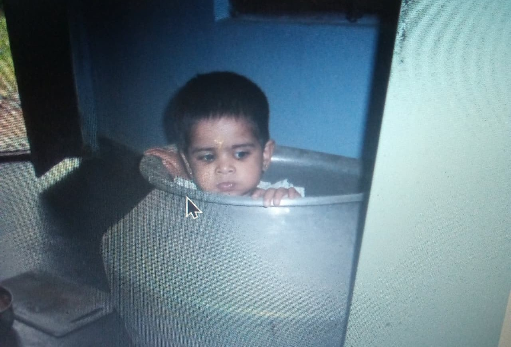

about ...
this is itsybitsy me in a cauldron
I exist. This is me.
hey, i'm just a second year college student who is honestly far too carefree with her assignments. Take this website for example- this is an assignment too, and yet quite a bit of it is still under construction. But just because I'm lazy that does not mean I cannot work. I've tried to make this website a personal space, a corner on the web just for me. And I had lots of fun making it!
I enjoy making art, reading books, crochet, photography, printing, board games, lots of wacky things, and being silly. I am a hoarder, love little trinkets, glitter and anything shiny (perhaps I'd have been a crow if I were not human. but my friends say I'm more of a dog). Anyway, this website was made by looking at sooo many other amazing websites on the indie web! The 'Links' button on the navbar has links to all the websites I found cool and just links to cool things in general- like a little library of curious stuff.
The 'desk' is supposed to literally be my desk- each object will take you to a page in relation to it- like the letter takes you to my diary. I don't have much else to say, explore this site yourself.
🌿
I hope you enjoy your visit here, you can leave a comment in the guestbook if you'd like!